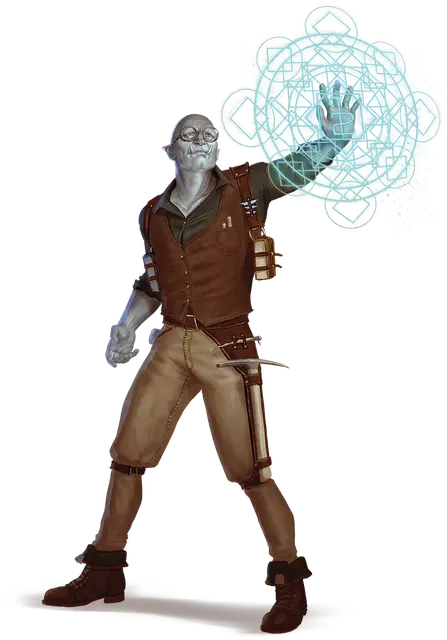

Резчик рун
Rune Carver

Если Мастер решит разрешить предыстории великаньего подкидыша и резчика рун, то все персонажи в кампании получат доступ к бонусной черте. Если вы выберете одну из этих предысторий, вы получите бонусную черту, указанную в этой предыстории. Если выбранная вами предыстория не даёт бонусной черты, вы получаете бонусную черту по своему выбору из следующего списка:
- Одарённый
- Крепкий
То, что мы называем рунической магией, является лишь бледной имитацией творчества Аннама. Он создавал миры из первозданных стихий, мы же пытаемся связать мельчайшие крупицы стихийной силы в мистические формы наших рун.
- ДИАНКАСТРА
Вы посвятили свою жизнь изучению практики создания рун. Независимо от того, обучались ли вы лично мастером-резчиком рун или учились, изучая гравюры в древних руинах, вы понимаете, как использовать сверхъестественную силу, заключенную в рунах.
Искусство создания рун изначально было создано великанами, но со временем эту практику переняли люди всех рас и происхождения. Таким образом, хотя гигантские руны являются наиболее распространенными, многие резчики рун включают в ремесло символы из своих родных языков.
Навыки: Восприятие, История
Владение инструментами: Один вид ремесленных инструментов.
Языки: Великаний
Снаряжение: набор ремесленных инструментов (на ваш выбор), маленький нож, точильный камень, комплект обычной одежды и кошель с 10 зм
Стили рун
Каждый резчик рун имеет уникальный стиль и предпочитаемый материал для создания рун. Чтобы определить, как вы делаете свои руны, вы можете свериться с таблицей «Стилей рун».
Стили рун
| к6 | Стиль |
| 1 | Вы пишете свои руны тонкой металлической иглой на воске или глине. |
| 2 | Вы вырезаете из кусков дерева маленькие фигурки, которые отмечаете своими рунами. |
| 3 | Вы гравируете руны на стеклянных бусинах и нанизываете их на ожерелья и браслеты. |
| 4 | Вы вшиваете свои руны в края одежды. |
| 5 | Вы вырезаете руны на наборе костей животных, которые вы можете пересобирать в разные формы. |
| 6 | Вы рисуете свои руны на свечах, расплавляя воск, чтобы сгладить гравюры. |
Умение: Ваятель рун
Вы получаете черту «Ваятель рун».
Создание персонажа резчика рун
Научные поиски, древние тайны или всевозможные судьбоносные встречи могут вдохновить персонажа на поиск секретов резки рун.
Предлагаемые характеристики. В таблице «Черты характера резчика рун» предлагаются различные черты, которые вы могли бы принять для своего персонажа.
Черты характера резчика рун
| к6 | Черта характера |
| 1 | Практично ли учить древний язык, который редко используется в повседневной речи? Нет. Весело ли это? Очень. |
| 2 | Я узнал, что один из моих предков был прославленным резчиком рун, чья история утеряна во времени. Я стремлюсь возродить это наследие. |
| 3 | Старые, традиционные обозначения рунного искусства выглядят такими скучными. Почему бы не придать своим рунам изюминку? |
| 4 | Изучая руны, я стремлюсь понять, как пали великие цивилизации прошлого, чтобы предотвратить то же самое с обществами настоящего. |
| 5 | Жизнь может быть вихрем хаоса вокруг меня, но всякий раз, когда я создаю свои руны, я чувствую умиротворение. |
| 6 | Мой мозг изо всех сил пытается обработать слова, написанные чернилами на бумаге, но тактильное ощущение вырезанных рун заставляет мой разум петь. |